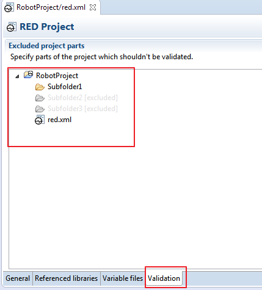

Validation
General information
Validation is a mechanism to read and parse Robot testcases in order to provide feedback about Robot defined spell check.
Validation mechanism walk down the project tree and read all testfiles format supported by RED (.robot, .txt and .tsv), mark all unknown/undefined keywords, variable misuse, missing resources etc.
Validation execution
Validation mechanism is executed any time when edited file is changed with slight delay while Build Automatic option is selected from Project.
Whole project validation can be started using option Project -> Clean.
Limiting validation scope
When working with bigger projects, it is good to limit validation scope to folders relevant to current work to speed up validation and reduce test error markers to be relevant to files under scope.
Excluded folders are still parsed so code completion is preserved, just validation is omitted thus validation errors and warnings are skipped for excluded folders.
Include/exclude can be triggered in Project Explorer under right click menu on selected folders:

Include/exclude can also be found in red.xml editor under Validation table - include/exclude action is available as right click menu.
In case of big amounts of .txt or .tsv files which are not Robot test cases, validation can be excluded on files bigger than size threshold

Note that exclude folders are grayed out, exclude state is inherited from parent folders.